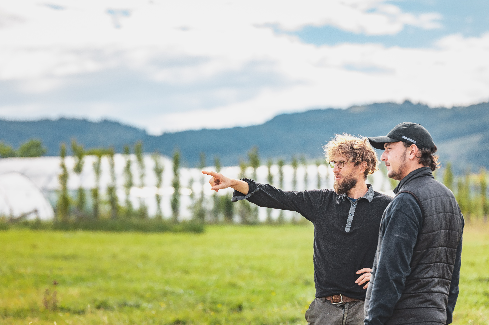
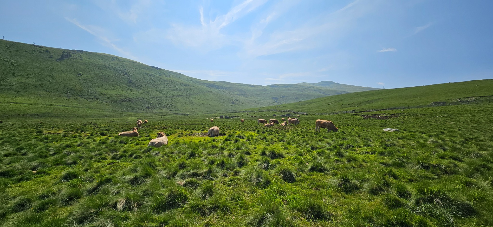

Gestion de projet
Structurer une démarche, coordonner les acteurs et faire avancer les actions : transformer une intention en projet concret, en gardant le cap et le lien avec le terrain.

La ruralité, l’agriculture et le pastoralisme sont au cœur de ce qui m’anime. J’y retrouve des savoir-faire, des liens humains et une relation au vivant qui donnent du sens à mon parcours.
Les territoires se comprennent d’abord en rencontrant celles et ceux qui les font vivre. Les éleveurs, leurs pratiques et leurs réalités quotidiennes nourrissent mon regard sur l’agriculture. Le pastoralisme m’intéresse particulièrement pour les liens qu’il tisse entre les troupeaux, les paysages et les femmes et les hommes qui en prennent soin.
Je crois à une évolution de l’agriculture qui s’appuie sur l’écoute, le partage d’expériences et l’expérimentation. Accompagner le changement, c’est prendre le temps de comprendre les besoins, faire dialoguer les points de vue et construire des réponses adaptées à chaque contexte.
Structurer une démarche, coordonner les acteurs et faire avancer les actions : transformer une intention en projet concret, en gardant le cap et le lien avec le terrain.

Écouter les besoins, comprendre les contraintes et favoriser les échanges pour avancer avec les éleveurs, dans le respect de leurs savoir-faire et de leurs objectifs.

Rendre les sujets accessibles, valoriser les initiatives et choisir les mots et les supports qui permettent de partager une expérience et de donner envie de s’y intéresser.

Faire circuler les connaissances, créer des occasions d’apprendre et rapprocher les expériences de terrain des démarches de formation.

C’est cette manière de travailler que je souhaite continuer à cultiver : rester curieux, apprendre des autres et contribuer à des projets utiles aux personnes et aux territoires.
Découvrir mon parcoursMe contacter